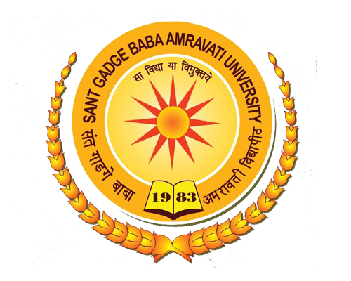

Dr. Sunita Dhotre
Ph.D, National IP Awareness Mission, Speaker, Department of Science and Technology, Women Scientist Scholar C, Innovation Ambassador , IIC Convenor
Experience
Associate Professor
Certifications
Generative AI: New policies, opportunities and risks
Big Science Foundation-Level 1
Data Science Foundation-Level 2(v2)
Test Scores
Introduction to Patent Cooperation Treaty
Score:100% April-2019
Python 101 for Data Science
Score:98% April-2019
GENERAL COURSE ON INTELLECTUAL PROPERTY
Score:94% DEC-2018
Education

Amravati University 1997-2001
Copyrights
Data extraction of BBCR Boger Boenninghausen's Characteristics & Repertory Homeopathy book into JSON Format:
Registered ROC:SW-16907/2023
Show image
RepertoryMate: Functional Chatbot Drug Recommendation using Boger Boenninghausen's Characteristics & Repertory Homeopathy:
Registered SW-17968/2023
Show image
AI powered Email Generation and Personalized System: Registered SW-19083 2024
Show image
Book Published
“Video Analytics” for Savitribai Phule University, Third Year Degree Course Artificial Intelligence and Machine Learning, Pragati Publication, Pune.
Show image
Honors and Awards
Introduction to Patent Cooperation Treaty
Issued by WIPO April-2019
General Couse On Intellectual Property
Issued by WIPO Dec-2018
Cambridge International Certificate
Secured Distinction in "Cambridge International Certificate for Teachers and Trainers (CICTT)" , by Cambridge University in Collaboration With Wipro, INDIA, August-2009
Projects
Protecting E-Mail privacy using Images and Steganography
Jan 2008
Sessions Conducted
Research Papers
National Conference
International Conference: